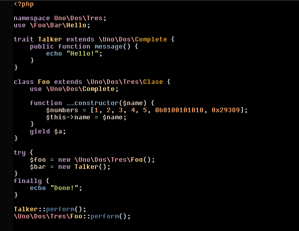

PhP Programming Language

| Language | syntax | link | symbol | defination |
|---|---|---|---|---|
PhP Programming Language |
 | PhP | |

| Paradigm | Designed by | Developer | First appeared | Stable release | Filename extensions | Preview release | Typing discipline | OS |
|---|---|---|---|---|---|---|---|---|
| Multi-paradigm: imperative, functional, object-oriented, procedural, reflective | Rasmus Lerdorf | The PHP Development Team, Zend Technologies | 1995; 26 years ago | 8.0.7[2] Edit this on Wikidata / 3 June 2021; 5 days ago | .php,.phar,.phtml,.pht,.phps | C2x (N2596) / December 11, 2020; 5 months ago[3] | Dynamic, weak since version 7.0: Gradual[3] | Unix-like, Windows, macOS |